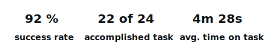
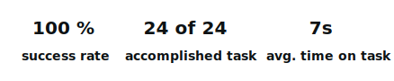

We were given a list of problems to pick one and develop a solution for it. I choose:
Through interviews with target users I figured a few common frustrations users had, that could be also stated as problems:
I made an online questionnaire, with 56 participants to determine who are my target users and define their needs and expectations. Here's the data summary:
Next I conducted 3 interviews with target users trying to inspect their habits, frustrations & pain points and
goals about food consumption.
I discovered the participants used the same pattern, then listed their main and
secondary frustrations and how they think they can handle them:
Using questionnaire and interviews data I created two opposite personas:
- the receptive & openminded;
- the resistant.
1. As an active young person I want to be able to keep track of my nutrition intake in order to develop healthy eating habits.
2. As a student on a budget, I want to be able to know what products I have at home and how to prepare them, so I lower my food expenses.
1. Alfred believes that eating right can rise his energy and concentration levels. He is struggling to find healthy recipes, and/or nutrition info. He would like to be provided with suggestions of meals fitting his diet and the ability to track nutrition intake.
2. Alfred is over shopping. At the store it seems like a good purchase, but then
he finds out he had these products at home or they don’t match his diet. In result he has to throw away
food or outstep his diet.
He's frustrated with how much this is increasing his expenses. He wants to
always know what products he has at home and be somehow reminded of expiring ones.
1. As a busy woman I want to be able to make and send shopping lists on the go, fast and easy, so I can save time.
2. As a mother I want to be able to quickly find recipes suitable for my children so they develop heathy eating habits.
1. Brie is a busy person. She manages her time well, but at the office it's never enough, so every once in a while she doesn't have time to tell her husband what to buy at the grocery store. She is too tired to shop after work, so they just order pizza for dinner more often than she likes to. Brie needs faster way to send shopping lists to her husband.
2. Brie has always been careful of what children are eating. Every morning she prepares breakfast and lunch for them to take at school. She finds it more and more difficult to think of new different meals. She is looking for a fast way to find suitable recipes for her kids.
For each persona, resolving all the problems stated above:
I use these flows as a guide when designing the sitemap & information structure. They were also the base on which i drew the paper prototype.
First testing I made with the paper prototype while I did the interactions.
The goal here was to
validate app functionalities, check elements recognizability and gather feedback.
Digital testing I made using Indigo.Design platform. It allows you to create tasks and set expected success path, without restraining users from completing the task in other way. It also shows unexpected interaction allowing you to see what users find more intuitive. Below are my task results & feedback:
Open pasta carbonara recipe, find the timer and start it.
- timer is not immediately visible;
- Make the whole row clickable/touchable;
The whole recipe component should be clickable. Navigation is clear.
Add the pasta carbonara recipe to saved.
- I am testing through phone and some elements are hard to tap;
Interaction icons need more white space and bigger tappable field.
The final step, before starting to build the UI is to develop a consistent component library. I use Brad Frost's atomic design methodology and like to add some CSS properties where I feel it's needed, to ease the development process.